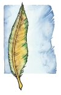

中立神祗
以下是六位平衡神祗的资料。

奇思洛夫（Chislev）
兽神，海生物之母奇斯拉（Kisla the Mother of Sea Creatures，海精灵），野性之神（米萨斯）
中等神祗
居住位面：隐蔽之谷
徽记：带有棕、黄、绿色的羽毛
颜色：棕色、黄色和绿色
天体徽记：奇思洛夫行星
阵营：绝对中立
神职：自然，野性，兽类
信仰者：德鲁伊，农耕者
牧师阵营：混乱中立，守序中立，绝对中立，中立邪恶，中立善良
领域：空气，动物，土，植物
偏好武器：短矛（“绿色保护者”）
喜好服饰：棕色的长袍，绿色的兜帽和绑腿，木制虔信勋章
奇思洛夫是自然的化身。据传说四季是随着她心中的情感而变化的：她的悲伤带来秋季，她的绝望带来冬季，她的希望带来春季，而她的愉快带来夏季。在春天的时候，她可能变得如同飓风般愤怒而危险，也可能像草原般平静。当她生气的时候，她将会召集自然的狂暴力量来惩罚那些招惹她的人。克莱恩上的所有动物和植物都尊敬奇思洛夫，如同许多类人种族的成员所做的那样。
奇思洛夫的教会主要是由定居在森林中深居简出的德鲁伊们组成。人们可能会看到一小部分奇思洛夫的神职人员，他们通常居住在以农耕为主的社区中。有些时候奇思洛夫的德鲁伊可能会被其他神祗的神职人员看做是蛮人，但他们对那些妄图掠夺自然的人绝不会手软。她的德鲁伊们总是把时间花费于在自己的保护区域巡视中，保护区域可能小到一个池塘，或者大到一片森林，他们会不断纠正任何失去平衡的事物。在早上的时间，他们通常会进行祈祷以获得法术，或者治疗动物，或者监视那些非法安放陷阱和诱捕器的偷猎者。他们把下午花费在照料植物上。而晚上他们祈祷并休息。
掘耕之日（the day of Harrowing）是奇思洛夫的德鲁伊们的重要日子，他们要进入人类的居住地，为了土地能获得好收成而祝福作物，这是极少数他们必须离开自己土地的日子之一。在当天，社区里的人们会欢迎他们，虽然很多人仍然提防着他们。奇思洛夫的牧师和德鲁伊庆祝所有的节气和季节变化，因为这反映了他们神祗在世界中的存在。
奇思洛夫和亦为林深深地爱着对方。他们没有孩子，因为对于奇思洛夫来说，动物和植物就是她的孩子。奇思洛夫的情绪可以变化得很剧烈 ――虽然不像她所鄙视的赛波音那么严重。赛波音和奇思洛夫之间的仇恨可以追溯到全圣之战时期，当时在奇思洛夫的帮助下，海洋女神才被击败。奇思洛夫与哈巴库克是盟友，她的神职人员也与他一同为了恢复被战火蹂躏的土地而努力工作。她反对西那瑞，因为工业会毁坏环境，但她们的矛盾仅限于口头的争吵。她鄙视魔吉安的信徒，因为他们传播腐败和瘟疫。
教义
自然无始亦无终。不惜一切代价维持自然之平衡。自然应被保护并养育，而非奴役或掠夺。技术与发展自有其地位，但与自然的真实天赋相比都应退居次席。
吉力安（Gilean）
灵魂之门，贤者，虚空
高等神祗
居住位面：隐蔽之谷
徽记：一本打开的书
颜色：灰色
天体徽记：灵魂之书星座
阵营：绝对中立
神职：平衡，知识，学习，自由，警觉
信仰者：抄写者，历史学者，教师
牧师阵营：混乱中立，守序中立，绝对中立，中立邪恶，中立善良
领域：知识，解放（*），保护
偏好武器：木棍（“贤者之杖”）
喜好服饰：带兜帽的灰色长袍，银制虔信勋章
帕拉丁和塔克西斯的兄弟吉力安是中立神祗的首领，也是托布尔――包含知识和真实，并记录了最高神创世历程的书――的拥有者。吉力安通常对周围事物表现得漠不关心，他是一名观察者，只有在造物秩序被打破时才会涉足凡间事务。即使在那种情况下，他仍然支持凡人保有选择自己命运的权利。
吉力安的神职人员通常从事抄写员、图书管理员或者历史学者等职业。作为职业的需要，他们可能会为了追寻知识而四处游历，或者也可能选择定居一处，记录当地发生的所有重要事件并在社会中传播他们的知识。他们中的一些人是大学中的教师或者指导员，在那里他们很受尊敬也很受欢迎。旅行的神职人员为了寻找知识，经常会无畏地前往各种危险地区探索。所有的知识都被认为是神圣的。没有一名吉力安的牧师曾经毁坏过书籍，无论里面记录的是什么内容。吉力安的牧师在每天太阳升起的时候为了获得法术而祈祷。书之月（the Month of the Book）是信徒们最重要的祷告时期。这一时期并没有日期上的规定，而是由神职人员来决定。在这个月中，神职人员必须从事历史学者或档案管理者的工作，他们必须专心学习一种自己选择的工作形式，为图书馆服务或者在学习场所教授知识。在这期间，他们不能为了自己的工作获得工资（虽然他们可以接受以食物、水和木材<board>等形式支付的报酬）。
吉力安的星座位于善良和邪恶之间，因为他是两方的协调者。吉力安经常扮演调解人的角色，他希望世界免于战乱，从而使世界本身及其知识能存在下去。他只有努林塔瑞一个孩子，他从吉力安身体中生出时就已经完全成熟了（sprang fully formed from him）。其他的中立神祗是他从天外天（the Beyond）招集来的，他们也协助了创世秩序的建立。
教义
要寻觅知识，因为知识不会寻找你。冷静并深思熟虑，还应分享你所拥有的所有知识。知识超越正邪之界，所以不要成为黑暗的奴隶或者感恩于光明。不要进行判断，不要运用知识把他人划归某一类，因知识乃是无选择无意见的。情感会蒙蔽学识。努力达到公正的境界。须知真相是难以捉摸的，信仰是不能长久的，唯知识是无尽的追寻。尽可能地记录知识。视而不见乃做学问者的最大敌人。

努林塔瑞（Lunitari）
努因（Luin，亚苟斯），幻术少女（米萨斯），夜之烛（索巴丁），红色之眼（古德兰），带面纱的少女
中等神祗
居住位面：隐蔽之谷
徽记：红色的圆或球
颜色：红色或洋红色
天体徽记：红月
阵营：绝对中立
神职：魔法，神秘知识
信仰者：红袍法师
牧师阵营：混乱中立，守序中立，绝对中立，中立邪恶，中立善良
领域：无（不获得神术）
偏好武器：无
喜好服饰：红色长袍
带面纱的少女努林塔瑞是掌管中立魔法的神祗，也是红袍高等法师（the Red Robe Wizards of High Sorcery）的主神。如同她的堂兄弟即其他两位魔法神祗一样，努林塔瑞的主要目标是在世界中发展魔法。
努林塔瑞没有神职人员。人们把她尊为红袍高等法师的主神。她的信徒数量远超过索林那瑞和努塔瑞的信徒数量，他们努力把魔法带入世界，并维持正邪魔法之间所存在的微妙平衡。
红袍法师随着红月月相的盈亏而不断涨削，红月每28天达到一次最高位（High Sanction），在那时他们的能量也达到最高。眼之夜时会出现三个月亮排成一线的罕见现象。这标志着克莱恩世界上的所有魔法达到了最高峰，所以这一天对所有高等法师都是最为神圣的。
努林塔瑞是吉力安的女儿，据说她是从他的思想中出生，而且诞生时就已发育成熟。努林塔瑞是一个活泼的年轻女子，也是一名魔术师，她经常为了娱乐的目的而运用自己的魔法制造幻象。她不断努力地协调她的堂兄弟们的利益冲突，并且会反对任何威胁到魔法在克莱恩大陆上存在的神祗。
教义
要献身于魔法。加强并且扩展世界中的魔法。努力维持正邪魔法之间的平衡，倡导人们使用中立魔法。将有潜质之人带入魔法殿堂。

李奥克斯（Reorx）
砧之神（艾莲<Elian>），锻造之神，武器大师（米萨斯）
高等神祗
居住位面：隐蔽之谷
徽记：锻造锤
颜色：瓦灰色和红色
天体徽记：李奥克斯行星
阵营：绝对中立
神职：创造，赌博，工匠，工程
信仰者：矮人，侏儒
牧师阵营：混乱中立，守序中立，绝对中立，中立邪恶，中立善良
领域：土，火，锻造（*）
偏好武器：战锤（“李奥克斯之力”）
喜好服饰：适于锻造时穿着的瓦灰色大衣，或者红色长袍（正式服装）
根据矮人和侏儒的说法，锻造之神李奥克斯是整个神系中最伟大的神祗。李奥克斯是矮人所崇敬的最高神，他们还自认为是被李奥克斯所眷顾的种族――虽然侏儒们也自认为是“真正的李奥克斯选民”。事实上，李奥克斯同等地喜爱这两个种族。
李奥克斯的教会因其稳定而著称。在对集体主义的激情的指引下，矮人们为李奥克斯的教会建立了一个严格的等级制度，其中的领袖是一名被称做星之主（the Starmaster）的矮人牧师。所有其他的神职人员在教会中也各司其职。在一个矮人部落中，部落牧师的地位甚至与首领不相上下。这些被称为锻造者的牧师们在矮人生活的各个方面都起着举足轻重的作用，比如为一个新生儿命名或主持成人仪式。同时，锻造者们也被赋予制造矮人族中最优秀武器的天赋。
尽管李奥克斯信仰者中侏儒这一分支的影响并不太大，但它也是十分重要的。在侏儒中，李奥克斯的神职人员和西瑞安的教士通力合作，他们制造了侏儒们进行发明所需的大部分金属。
一般认为，一名矮人的锻造者会一天到晚在锻造炉边工作，除非他出去旅行（即使是这样，他也可能带着一个便携式的锻造炉）或者出席教会的一些仪式。当完成了锻造炉边的工作后，这名牧师会为了法术而进行祈祷。
侏儒牧师们则为了他们的生命任务（Life Quests）而忙碌，这些任务通常是与教会有关的。他们在晚上也会为了法术而祈祷。
李奥克斯的牧师在他或她的一生之中必须创造一件物品（武器、盔甲或其他金属物品）来表达对自己李奥克斯的敬意。这件物品或者发明必须由该牧师亲手制造，并且必须具有非同一般的品质或工艺。完成这件任务通常会花费数年的时间。
哈恩克格节（Harnkeggerfest）是山丘矮人为了表达对李奥克斯神职人员们的敬意而设立的节日。这个节日从来都是盛宴和欢庆的日子，在庆典过程中，李奥克斯的牧师们进行宣誓，并给人们颁发奖赏。米沙凯月（Z注：GOD-DAYS神记年法的三月）的19日是献给李奥克斯的最神圣的日子。为了表达崇敬，铁匠们会把这一天用来锻造特别精致的物品。许多李奥克斯的牧师选择在这一天完成他们的生命之任务（life project）。在别管他山脉也可以看到人们庆祝哈恩克格节，在那里，侏儒们把他们的新发明展示给所有人。侏儒们管它叫做“展出我们在过去一年中所研究的不可思议的发明并在事后把造成的脏乱整理干净的日子（Dayforshowingoffallthemarvelousinventionswehavebeenworkingthislastyearandcleaningupthemessafterward）”。
李奥克斯与商业和工业之女神西那瑞合作共同刺激矮人社会的经济发展。他把灵感赐与侏儒们，以使他们有能力发明各种奇妙的机器。他并未试图直接引导坎德人，但他喜欢他们并且注视着他们。
教义
创造之中蕴涵美。生命中最为美好之事莫过于打造永恒之物，过程亦与结果同样重要。可工作之时切不可虚度光阴。仪式与经验固然可靠，创新方为生死攸关之大事。无论所做何事，均应尽力精通技术，尊敬同行者，并享受工作成果。

西那瑞（Shinare）
平衡的天平（米萨斯），银器大师（索巴丁），会走路的图书馆（亚苟斯），翼者（精灵地区），生翼的胜利之神
中等神祗
居住位面：隐蔽之谷
徽记：狮鹫之翼
颜色：金色、银色和棕色
天体徽记：西那瑞行星
阵营：守序中立
神职：财富，商业，旅行
信仰者：商人，贸易者，矮人
牧师阵营：守序中立，绝对中立
领域：秩序，机运，旅行
偏好武器：轻型硬头锤（“镶宝石的愉悦”）
喜好服饰：细制的长袍，珠宝和金饰
西那瑞被称为“生翼的胜利女神”，她也是掌管财富、工业和商业的神祗。矮人们把她尊为工业和财富的主神――“银器大师（Silver Master）”。西那瑞的信徒都是商人、雇佣兵和贸易者。盗贼和游荡者偶尔也会向西那瑞祈祷，可能是希望她能纵容他们的行为。
西那瑞的神职人员都是十分勤勉的。他们努力工作以积累财富和声望，但他们不能过于贪婪，因为那将是一条把他们引向西都凯的黑暗之路。他们必须致力于改善自己所处社会的状况，因此西那瑞的神职人员是克莱恩世界中许多风险投资事务的奠基人。由于他们可以为社区带来利益，所以西那瑞的神职人员在各地都受到尊重和钦佩。
西那瑞绝不允许她的神职人员拖欠赋税或宗教税，欺瞒行为同样也是不被允许的，他们必须要交纳自己应承担的部分。
有些牧师在大陆各处旅行，以提供建议和资本的方式来帮助那些尚在奋斗的从商者。这些旅行的传教士无论在城市还是小镇中都十分受欢迎，因为他们可以提供货币兑换和调解商业纠纷等服务。一般认为，所有西那瑞的神职人员在传教的同时也要经营自己的商务，并且安塞隆大陆上几乎所有工会和垄断组织都有一名西那瑞的牧师在支持和赞助。
在夜晚，西那瑞的牧师为了法术而祈祷。聆听之日（the Day of Hearing）是西那瑞信仰者们的圣日。在这一天，牧师们将聆听人们解释自己的商业计划，并对那些听起来有利可图的计划进行资助。金色之周（the Golden Week）是教会的一个重要节日。从西瑞安月（Z注：神记年法8月）1日到5日的这一周之中，牧师们斋戒并清点自己的资产。他们将为下一年指定计划并回顾自己投资的成果。这是一个私人性质的仪式，但在5日的时候，每名牧师都将为他的所有朋友和雇员举行一个盛大的晚会。
西那瑞的伴侣是掌管创造之火的神祗西瑞安。与西那瑞的务实不同，西瑞安是一个充满梦想的人和一名艺术家。两名神祗相得益彰。虽然他们的关系远没有稳定下来，但他们同心协力使世界更加繁荣。西那瑞喜欢李奥克斯，因为他们拥有相同的兴趣，也因为工匠和商人之间具有紧密的联系。西那瑞的死敌是西都凯，因为他所崇尚的贪婪而阴险的经商方式让所有从商者背上了恶名。
教义
工商业乃致富之路。努力工作必可获得财富为回报。贪婪将毁灭已获成果。贫穷乃不勤之果。绝不纵容懒惰与无知。世上唯聪明勤勉之人可发现机会与财富。进取心为最重，守业亦不可忽视。生意之中应重公平与诚信，欺骗乃毁灭之路――但不必畏惧竞争，因其乃财富之源泉。

西瑞安（Sirrion）
炼金术士，火焰大师，流淌的火焰，法师（米萨斯）
中等神祗
居住位面：隐蔽之谷
徽记：多彩火焰
颜色：亮红色和黄色
天体徽记：西瑞安行星
阵营：混乱中立
神职：火，力量，太阳
信仰者：炼金术士，恋人，战士
牧师阵营：混乱邪恶，混乱善良，混乱中立
领域：混乱，火，激情（*）
偏好武器：重型链枷（“火焰打击”）
喜好服饰：平滑的红黄色长袍，带有金制和铜制火焰标记
西瑞安是掌管创造和激情的神祗。他不仅能将灵魂之火塑造成美丽的形态，还可以控制从炽热的太阳到微弱的烛光的所有物理形态的火焰。炼金术是也他的领域，因为这是一种使物体从一个状态变化到另一个状态的艺术，这种转变通常也是通过净化之火来完成的。西瑞安发动森林火灾来清除老树孕育新苗。他会烧伤那些玩火者，以教导他们尊重火。只有那些狂乱失控的火焰才属于火山与毁灭之神沙苟斯。
西瑞安并非一名注重凡间信徒的的神祗，虽然火焰的力量和美为他引来了很多人。他会撵走那些只渴望力量的人，而接受那些热爱火焰之美的人。只有当西那瑞――他的配偶，也是物质财富之神――占据了上风的时候，他才会主动地征召一些信徒。如同火焰一样，西瑞安很容易突然爆发，之后又默不作声。他的牧师们在本质上同样充满激情，但情绪飘忽不定。
西瑞安的牧师必须在家中或神殿中燃起一盏长明灯。每天清晨他在火焰前祈祷从而获得法术。思想内的灵魂之火（inner fire）也不应被遗忘，牧师每天都必须把他的内心之火塑造为一个新的形态。整个下午，牧师们都要照顾社区里的火焰，比如在工匠铺、酒馆以及其他公共场所燃烧的火焰。在晚上的时候，尤其是在小城镇里，牧师有时可能会燃起一堆篝火，运用他的力量驱使火焰舞蹈并改变颜色，以取悦孩子们并教授他们有关他们自己的心灵之火的事情。
西瑞安的牧师也扮演消防员的角色。只要建筑物或森林里有火灾发生，他们就会运用他们的法术来尝试控制它。他们在使用火焰促进森林的新陈代谢方面也具有丰富的知识。但是这会在西瑞安的信徒和那些把火焰仅仅看成毁灭的人之间造成冲突。
在永恒之日（the Eternal Day）的当天，西瑞安的牧师可以重新获得维持永恒之火的法术。季节交替之日是牧师们的神圣之日，那是不放松警惕的宽容之日。这些日子是他们仅有的可以让火焰熄灭的日子，因为西瑞安不稳定的情绪可能会使它们造成毁灭。
因为西瑞安是激情之神，所以恋人们通常会给他的牧师呈送礼物，以保持爱情之火长久不熄。
西瑞安的配偶是西那瑞，工业和商业之神。他们的关系是充满激情的（fiery）。西那瑞是一个机会主义和务实主义者，但西瑞安是一名艺术家。不看这一点的话，他们的爱还是非常深厚的。
教义
火即生命，火亦死亡。火为最诚实者。火从不歧视。火乃孕育变化之器具。火乃有益且非凡之工具。消除人们对火的恐惧，教会他们火所能为他们做的一切有益之事。以火焰为动力为世界带来光亮和温暖。绝不要让火焰失控，因一切燃烧的火焰皆有其存在之因。寻找他人与自身的内在之火。
亦为林（Zivilyn）
生命之树，智者（米萨斯），世界之树
中等神祗
居住位面：隐蔽之谷
徽记：巨大的绿色和金色树木
颜色：绿色和金色
天体徽记：亦为林行星
阵营：绝对中立
神职：智慧，远见，预言
信仰者：哲学者，冥想者
牧师阵营：混乱中立，守序中立，绝对中立，中立邪恶，中立善良
领域：洞察（*），知识，冥想（*）
偏好武器：木棍（“启蒙之藤”）
喜好服饰：简朴的苔绿色长袍，无兜帽，金制虔信勋章
亦为林是智慧之神，被称做“生命之树”，他包含了宇宙的所有洞察力。他的分支伸入每个时间和空间，存在于过去和未来。他的领域是知识、平衡和理解。
亦为林是一名冷静、自信的神祗。他从不愤怒或咆哮。他是诸神中最具智慧的一位。
亦为林教导他的信徒们智慧本身就是一种力量，它胜过善良与邪恶。他要求他的神职人员认识到智慧是随年龄增加的――越年长的牧师在教会等级中所处的地位就越高。教会的高等牧师被称为星之主（the Starmaster），他是由亦为林亲自指定的，而且他还被赋予强大的知识力量。在社区里，亦为林的神职人员通常从事顾问、冥想者、哲学者和外交官等职业。他们的工作更多的是协助（facilitate）而非教导。在那些缺乏帕拉丁牧师的地方，亦为林的牧师就成为了法定的官员和审判庭上的顾问。
在晚上用过晚饭并冥想过一天的经历之后，亦为林的牧师会为了法术而祈祷。米沙蒙特月（Z注：亚苟斯地区的3月）的25日，即反思之日（the Day of Reflection），对亦为林的牧师们是最重要的日子。这一天以斋戒和热烈的赞歌拉开序幕。在中午的时候，牧师们要独自动身去一个隔离的区域，并把这一天剩下的时光都用于在那里冥想。
亦为林和他的配偶奇思洛夫一起努力维持克莱恩世界的平衡。他的角色是吉力安最亲密的顾问，因为他们在寻求智慧和知识这点志同道合，而且温和而善解人意的亦为林恰可以充分理解吉力安的孤僻冷漠的本性。对像沙苟斯和塔克西斯等神祗所表现出来的强烈的仇恨情绪，亦为林是持反对态度的，他同样反对奇力-乔里斯对武术的追求，但他不把任何神祗算做自己的敌人。
教义
智慧乃永恒之物。研究所有可能后果再行动。切勿忘记你在宇宙中的地位。摆脱肉体的羁绊。寻找解释，而非事实，因知识易错而智慧则否。在战争或冲突中保持中立。成为那些寻求和平者的顾问。所有智慧从内而来，运用于外。智慧无法学习或借取，智慧只知平衡。时间与空间为平衡之一体。以平和之心对待自然，因其乃智慧之摇篮，以平和之心对待自己，因你即智慧之容器。